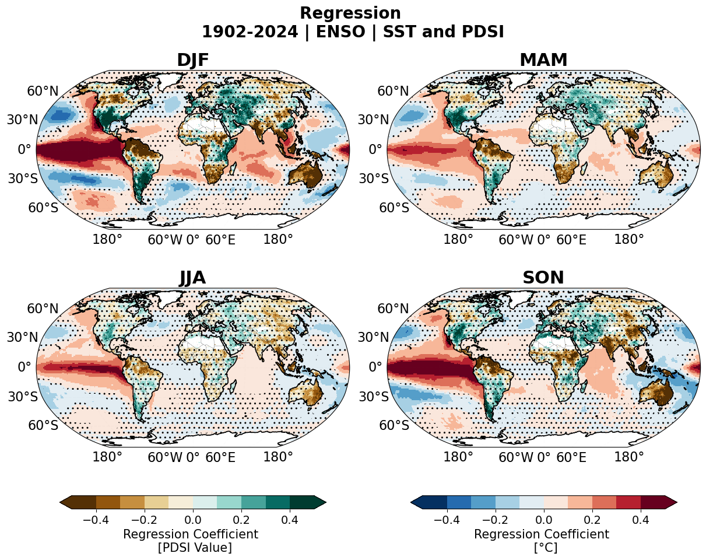
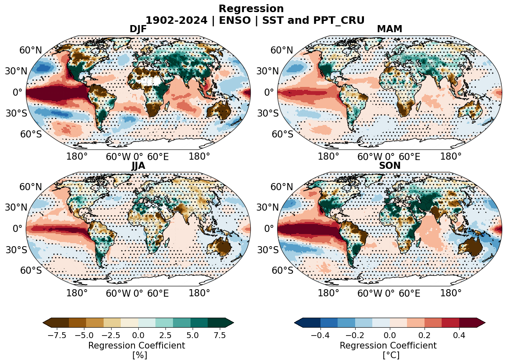
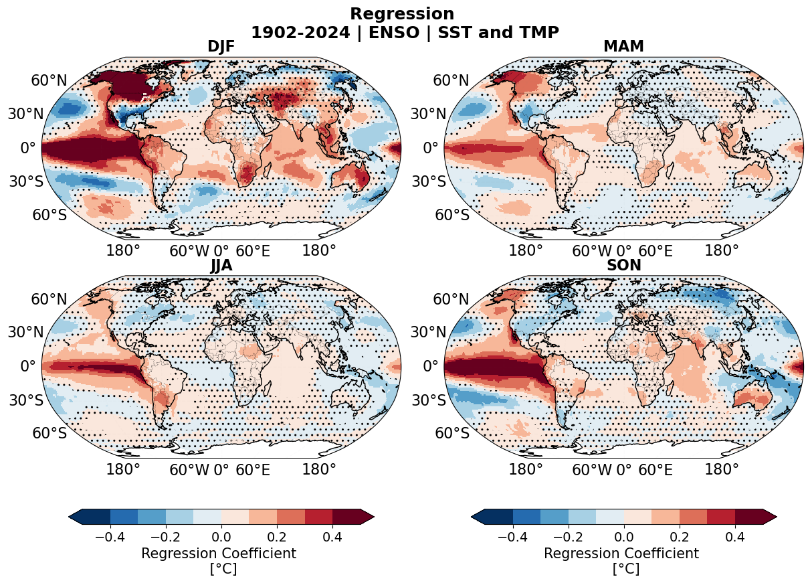
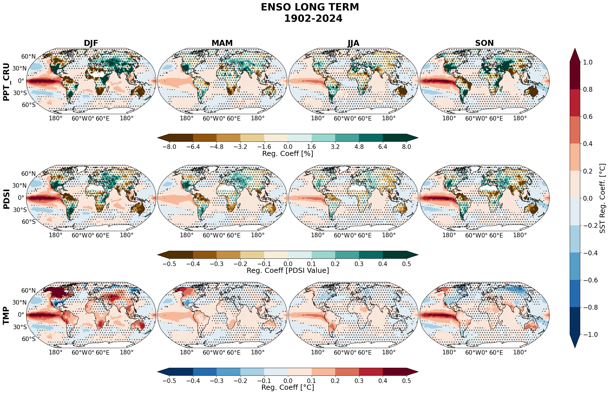
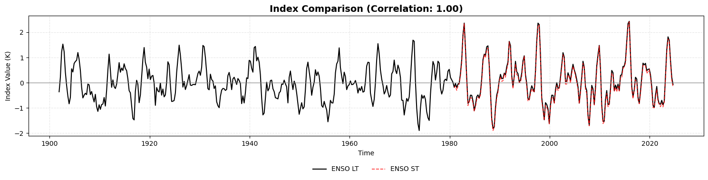
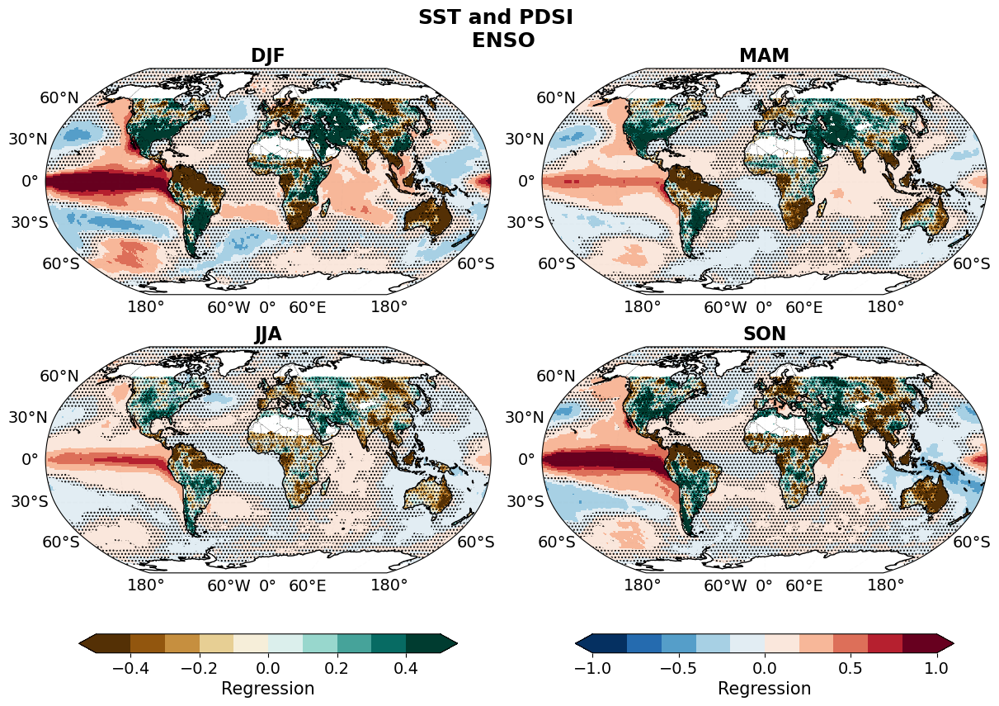
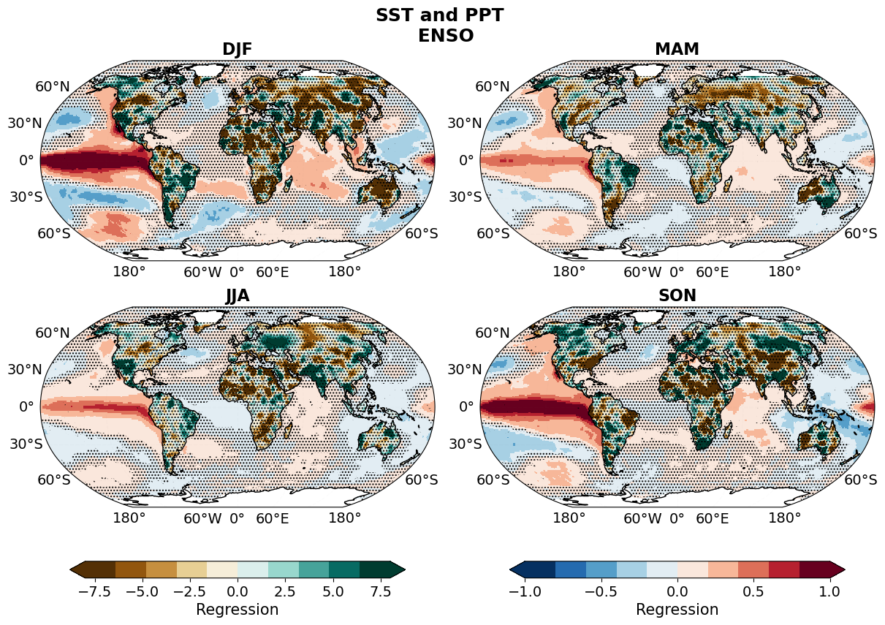
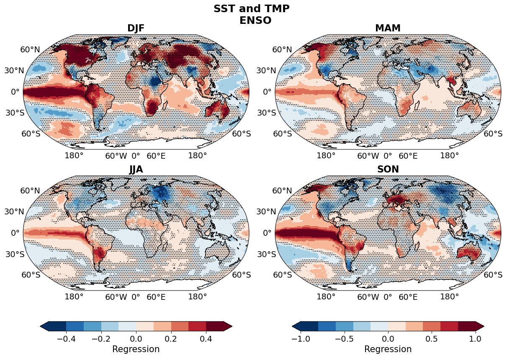
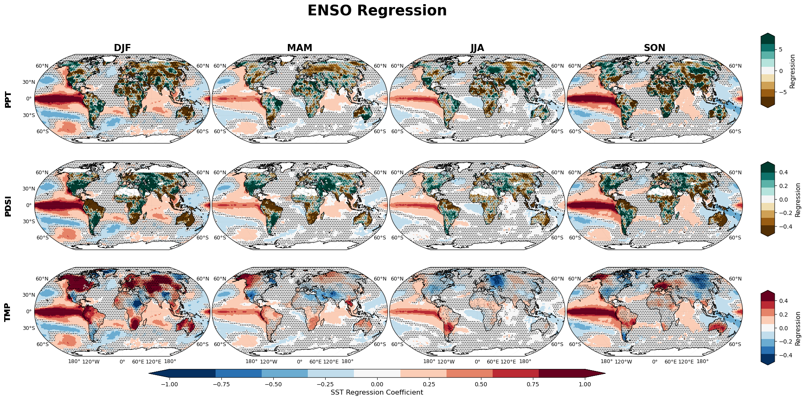

ENSO Long Term
1901–2024
Index Comparison
ENSO Index and PSD (Long-Term)
Teleconnection Maps
Explore ENSO impacts on hydroclimate over the century-plus record.




Analyze the influence of ENSO on global hydroclimate variability.

ENSO Index and PSD (Long-Term)




ENSO Index and PSD (Short-Term)



